A from-scratch reproduction of OpenAI's emergent hide-and-seek behaviors (Baker et al., ICLR 2020) in a 2D MuJoCo world — trained on a single GPU through pure zero-sum self-play, with no shaped rewards and no demonstrations. Includes a custom Difference Rewards credit-assignment algorithm.
A single shared actor (Transformer + LSTM) drives all agents, a centralized global critic estimates advantage, and the only reward is zero-sum: +1 / EPISODE_LEN per step for the winning team.
Seeking and fleeing emerge by checkpoint 4k. By 5k–6k, agents develop genuine cornering strategy — seekers cut off escape angles, hiders use walls to break line-of-sight.
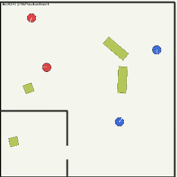
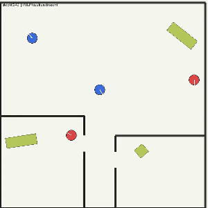
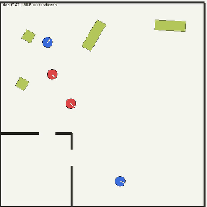
Room entry was still inconsistent, but hiders began picking up boxes and dragging them to walls — extending their corner-hiding instinct to movable objects.
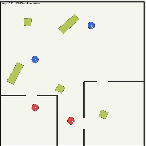
Switched to quadrant spawn — hiders and boxes inside the first room, seekers outside — creating a natural pressure gradient. Seekers learn to navigate the doorway and search inside.
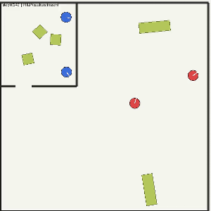
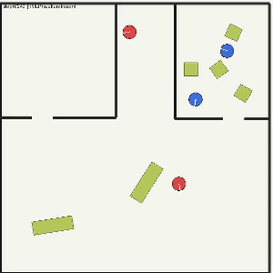
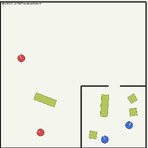
Hiders respond to room invasions with box-assisted concealment. Single-box hiding emerges by 20k; by 22k–25k both hiders coordinate to use separate boxes.
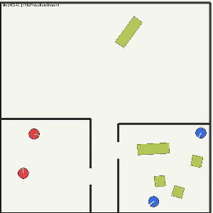
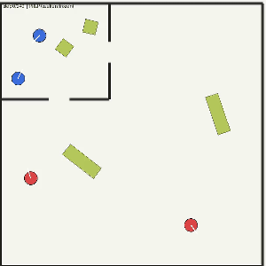
The most sophisticated behavior: hiders learn that approaching the doorway risks being seen. They avoid it, place a box exactly at the entrance, and lock it so seekers can't push it aside — effectively barricading the door.
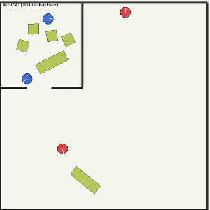
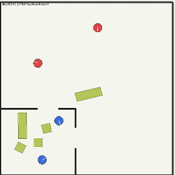
Each agent sees the world as a list of entities — itself, other agents, boxes — plus a 72-ray LiDAR sweep, with no fixed ordering. Every entity is embedded, then a vision mask hides anything outside the 135° cone or behind a wall, so attention only mixes what the agent can actually see. An LSTM adds memory; four independent heads emit a factored action.
Shown above is the policy. During training it's paired with a centralized critic (sees the full global state, outputs separate hider / seeker / intrinsic values) and a dual-channel RND module (spatial + interaction novelty, gated to the losing team) for exploration.
Environment. MuJoCo 2D · 10 m × 10 m arena · procedural BSP rooms · 72-ray full-circle LiDAR · 135° FOV occlusion · grab & lock mechanics (4–6 boxes/episode, ≥2 elongated) · 40% preparation phase (seekers frozen) + 60% competition.
Both this project and OpenAI use centralized training with decentralized execution — an all-seeing critic during training, independent policies at run time. What differs is how the team's single reward gets divided among teammates.
OpenAI's PPO hands the whole team one shared score. When the team wins, every agent is told "good job" by the same amount — even one that stood still while its teammate made the play. The signal never tells an individual agent whether its own actions actually mattered.
MAPPO + GAE keeps that shared critic but uses GAE to turn the raw reward into a smoother estimate of how much better than expected each moment was. That cleaner team signal was enough to grow consistent chase/flee by ~160K episodes — but it still can't isolate a single agent's contribution, which is exactly what pushed me toward per-agent credit.
I switched to COMA (counterfactual multi-agent) credit assignment to test whether per-agent counterfactual gradients would sharpen Phase 2. Both policies collapsed within ~40 iterations: the centralized Q-critic's counterfactual differences were dominated by noise at this reward horizon (SNR ≈ 0.15). Per-minibatch normalization amplified that noise to unit-scale gradients, entropy fell to 0.05 — a degenerate fixed-action policy.
Instead of learning the counterfactual from a noisy Q-critic, I compute it exactly from the reward's line-of-sight structure. The raycasting already determines who can see whom, so removing agent i gives the true counterfactual at zero approximation cost.
Each agent's signal is the team reward minus what the team would have earned without it. The final advantage blends the team-level GAE with this per-agent marginal credit:
Result: chase/flee re-emerged by checkpoint 5k–6k — matching MAPPO+GAE and confirming COMA's failure was an approximation-noise problem, not a fundamental one.
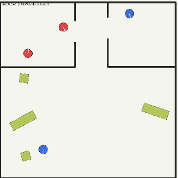
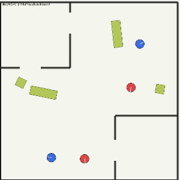
| This project | OpenAI (Baker et al.) | |
|---|---|---|
| Environment | MuJoCo 2D (top-down) | MuJoCo 3D |
| Agents | 2 hiders + 2 seekers | 1–3 hiders + 1–3 seekers |
| Algorithm | MAPPO + Difference Rewards per-agent credit | PPO + shared team value baseline no per-agent credit |
| Compute | Single GPU (A10G), 32 envs | Multi-GPU cluster + 4000 CPUs |
| Chase / flee | ~160K episodes consistent | 0–2.69M episodes |
| Room hiding + object use | ~640K–960K episodes emerging — ~85–90% of episodes, not yet fully refined | 2.69–8.62M episodes |
| Doorway blocking + lock | ~864K–960K episodes emerging — ~85–90% of episodes, not yet fully refined | 2.69–8.62M episodes |
Phases 0–1 are dominated by planar navigation and horizontal line-of-sight — OpenAI's agents are also floor-bound there, making the episode-count comparison fair. The efficiency gain on later phases is also partly attributable to the simpler 2D action and physics space.